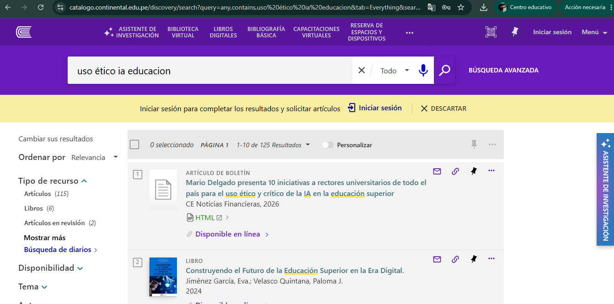
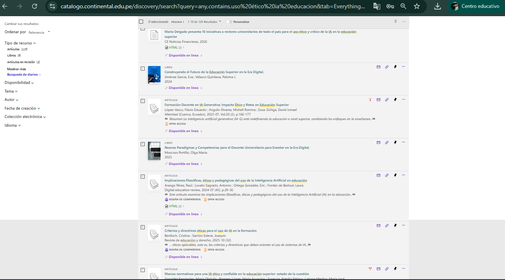
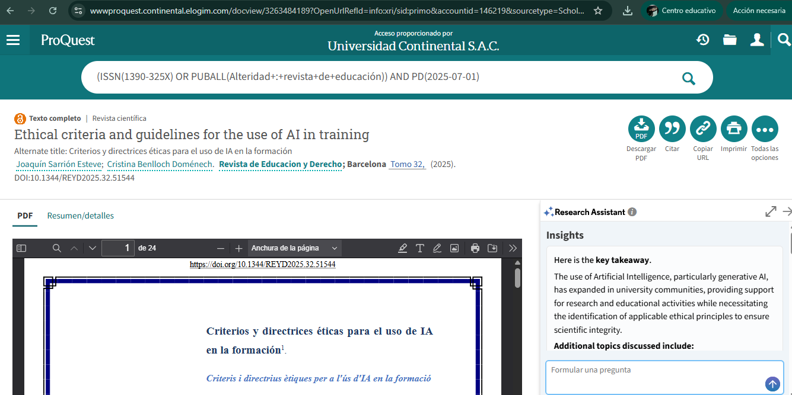
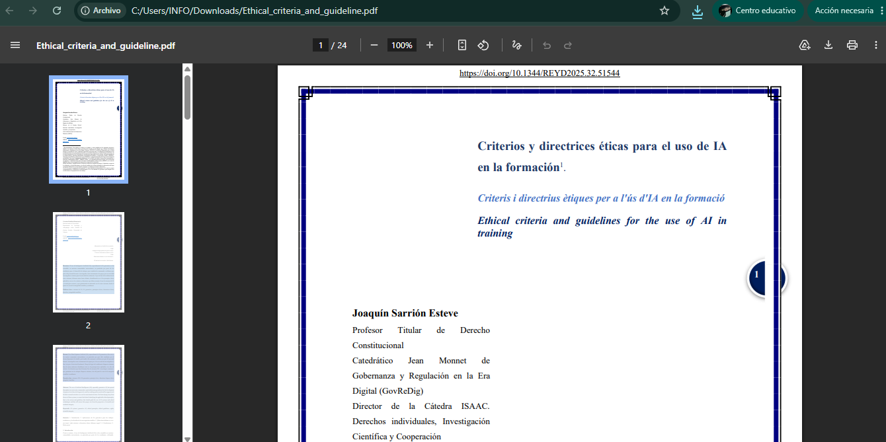
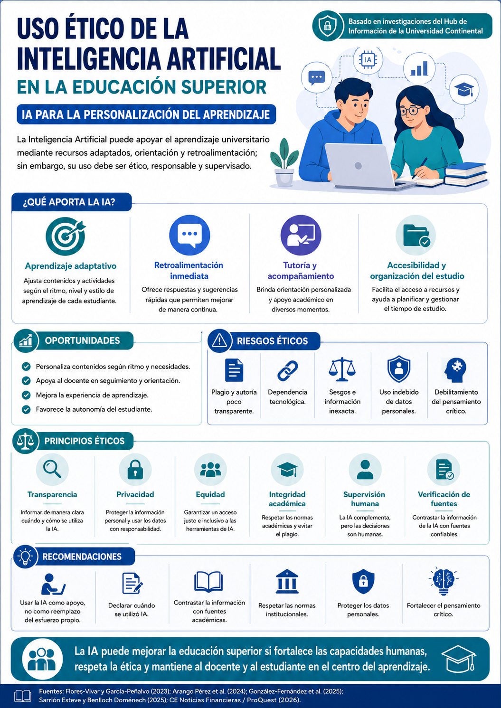

Aprendizaje adaptativo
La IA puede analizar el avance del estudiante y sugerir rutas de estudio, contenidos o actividades acordes con su nivel de comprensión.
Gestión de la Información y del Aprendizaje
Sitio académico sobre la IA para la personalización del aprendizaje, elaborado con investigaciones recuperadas desde el Hub de Información de la Universidad Continental.
Introducción
La Inteligencia Artificial se ha incorporado progresivamente a la educación superior mediante asistentes conversacionales, motores de búsqueda inteligentes, plataformas adaptativas, herramientas de escritura, sistemas de análisis del rendimiento y recursos de apoyo académico. En este contexto, su uso puede favorecer la personalización del aprendizaje, porque permite adaptar contenidos, actividades y retroalimentación a las necesidades de cada estudiante.
Sin embargo, el uso de IA en la universidad exige responsabilidad. La tecnología puede apoyar el aprendizaje, pero también puede generar riesgos cuando se utiliza sin orientación: plagio, dependencia tecnológica, información falsa, sesgos, vulneración de datos personales y pérdida de pensamiento crítico. Por ello, esta página presenta una revisión académica sobre el uso ético de la IA en la educación superior, con énfasis en la personalización del aprendizaje y la integridad académica.
Investigación y recopilación de información
Se realizó una búsqueda documental usando el catálogo y bases académicas disponibles mediante el acceso institucional de la Universidad Continental. Las capturas evidencian la búsqueda, los resultados, la ficha del artículo y la descarga/visualización del PDF.
Consulta: “uso ético IA educación”.
Revisión de artículos, libros y documentos académicos.
Identificación de artículos pertinentes y actuales.
Lectura, síntesis, citas y referencias APA.




Desarrollo
La personalización del aprendizaje consiste en ajustar recursos, actividades, tiempos, apoyo y retroalimentación de acuerdo con el ritmo y las necesidades de cada estudiante.
La IA puede analizar el avance del estudiante y sugerir rutas de estudio, contenidos o actividades acordes con su nivel de comprensión.
Puede brindar orientaciones rápidas, explicar errores y recomendar mejoras, siempre bajo criterio docente.
Permite resolver dudas iniciales, organizar tareas y apoyar el aprendizaje autónomo sin reemplazar la orientación humana.
Facilita la búsqueda, organización y selección de información académica, siempre que se verifique con fuentes confiables.
La IA puede mejorar la educación superior si se utiliza como herramienta de apoyo para fortalecer las capacidades humanas, personalizar el aprendizaje y mejorar la experiencia educativa. Su valor no está en reemplazar al docente ni al esfuerzo del estudiante, sino en complementar el proceso formativo con responsabilidad, transparencia y ética.
Situación problemática
En la educación superior, los estudiantes utilizan cada vez más herramientas de IA para redactar, resumir, traducir, buscar información, resolver actividades y organizar trabajos académicos. Aunque estas herramientas pueden apoyar el aprendizaje, el problema surge cuando se usan sin declarar su intervención, sin verificar fuentes o como reemplazo del análisis personal.
La ausencia de normas institucionales claras y de formación en ética digital puede generar plagio, dependencia tecnológica, debilitamiento del pensamiento crítico, uso inadecuado de datos personales y desigualdad entre quienes acceden o no a estas herramientas. Además, existe el riesgo de asumir como verdadera toda respuesta generada por IA, sin contrastarla con fuentes académicas.
Por ello, el desafío universitario no consiste en prohibir la IA, sino en orientar su uso responsable mediante principios de transparencia, privacidad, equidad, integridad académica, verificación de fuentes y supervisión humana.
(Arango Pérez et al., 2024; Flores-Vivar & García-Peñalvo, 2023; González-Fernández et al., 2025; Sarrión Esteve & Benlloch Doménech, 2025)
Antecedentes de investigación
Flores-Vivar y García-Peñalvo analizan la IA en el marco del ODS 4 y sostienen que puede apoyar a docentes y estudiantes, pero debe permanecer bajo control humano y orientarse al bien común.
(Flores-Vivar & García-Peñalvo, 2023)Arango Pérez y colaboradores defienden una mirada crítica: la IA puede aportar al aprendizaje, pero debe humanizar la tecnología y mantener la relación profesor-estudiante en el centro.
(Arango Pérez et al., 2024)González-Fernández y colaboradores identifican desafíos éticos, marcos regulatorios, formación ética y modelos didácticos como ejes para una IA confiable en educación superior.
(González-Fernández et al., 2025)Sarrión Esteve y Benlloch Doménech explican que la IA generativa ya se utiliza en comunidades universitarias y que deben definirse principios éticos para preservar la integridad científica y académica.
(Sarrión Esteve & Benlloch Doménech, 2025)El documento recuperado desde ProQuest evidencia que la IA generativa ya forma parte de la vida académica y debe abordarse desde dimensiones tecnológicas, éticas, filosóficas y pedagógicas.
(CE Noticias Financieras, 2026)Análisis académico
Usar la IA como apoyo, no como reemplazo del esfuerzo propio.
Declarar cuándo se utilizó IA en el trabajo académico.
Contrastar toda respuesta con fuentes académicas.
Respetar las normas institucionales de integridad académica.
No ingresar datos personales o sensibles.
Fortalecer el pensamiento crítico y la reflexión propia.
Conclusiones y recomendaciones
Infografía
La infografía sintetiza los beneficios, riesgos, principios éticos y recomendaciones para el uso responsable de IA en la educación superior.

Inserta aquí el enlace de tu video o súbelo a Google Drive/YouTube. Duración recomendada: 3 a 5 minutos, con cámara encendida y usando la infografía como apoyo visual.
Guion sugerido
Referencias bibliográficas
Arango Pérez, R., Lovato Sagrado, A., Ortega González, E., & Fontán de Bedout, L. (2024). Implicaciones filosóficas, éticas y pedagógicas del uso de la Inteligencia Artificial en educación. Digital Education Review, 45, 29–36. https://doi.org/10.1344/der.2024.45.29-36
CE Noticias Financieras. (2026, 16 de abril). Mario Delgado presenta 10 iniciativas a rectores universitarios de todo el país para el uso ético y crítico de la IA en la educación superior. ProQuest Central.
Cruz, M. (2015). Modelos de búsqueda y recuperación de la información. Ediciones Trea.
Flores-Vivar, J. M., & García-Peñalvo, F. J. (2023). Reflexiones sobre la ética, potencialidades y retos de la Inteligencia Artificial en el marco de la Educación de Calidad (ODS4). Comunicar, 31(74), 37–47. https://doi.org/10.3916/C74-2023-03
González-Fernández, M. O., Romero-López, M. A., Sgreccia, N. F., & Latorre Medina, M. J. (2025). Normative framework for ethical and trustworthy AI in higher education: State of the art. RIED-Revista Iberoamericana de Educación a Distancia, 28(2), 181–208. https://doi.org/10.5944/ried.28.2.43511
Sarrión Esteve, J., & Benlloch Doménech, C. (2025). Criterios y directrices éticas para el uso de IA en la formación. Revista de Educación y Derecho, 32. https://doi.org/10.1344/REYD2025.32.51544